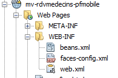
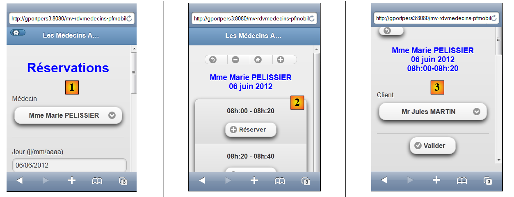
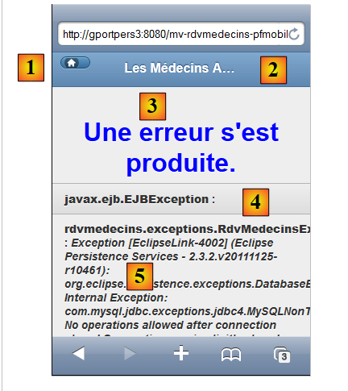
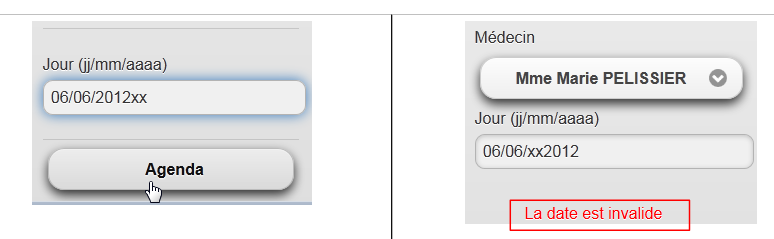
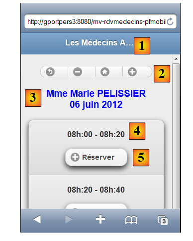
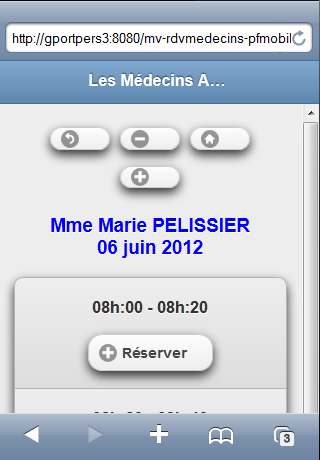
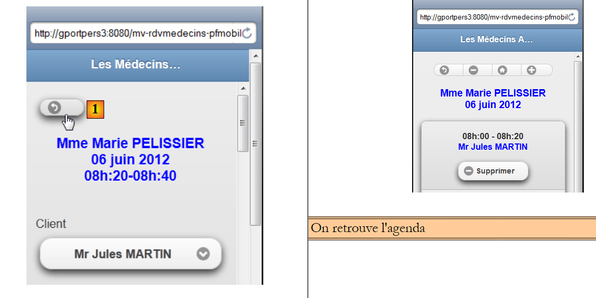
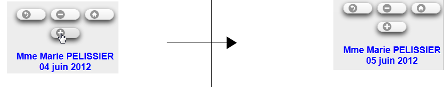
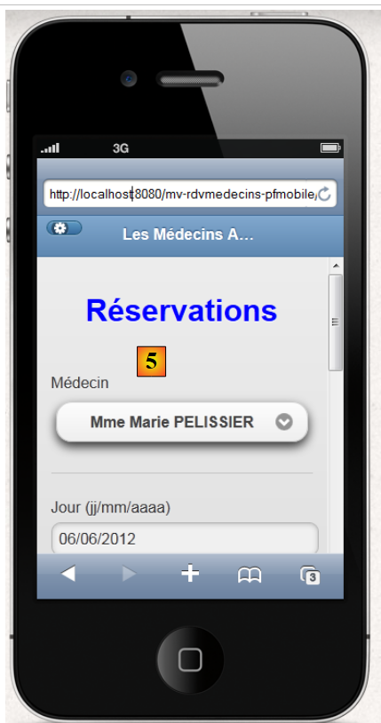

9. Sample Application 05: rdvmedecins-pfm-ejb
Let’s review the structure of the JSF/EJB example application 01 developed for the GlassFish server:
 |
We are not changing anything about this architecture except for the web layer, which will be implemented here using JSF, PrimeFaces, and PrimeFaces Mobile. The target browser will be a mobile browser.
 |
We have developed two applications with GlassFish:
- Application 01 used JSF/EJB and had a fairly basic interface,
- Application 03 used PF/EJB and had a rich interface.
Due to the limited number of components available in PrimeFaces Mobile, we will revert to the basic interface of Application 01. Additionally, the views must be able to adapt to the small screen size of mobile devices.
9.1. The Views
To give you an idea, here are a few screenshots of the application running in an iPhone 4 simulator:
 |
- in [1], the home page. Note that this time we had to specify the machine name (you can also enter its IP address), because using the localhost machine resulted in nothing being displayed,
- in [2], the doctor dropdown menu,
- in [3], the desired date for the appointment,
- in [4], the button to request the day’s schedule,
- in [5], the new view displays the doctor’s available time slots,
- in [6], a series of buttons to navigate the calendar,
- in [7], a message reminding you of the doctor and the day,
- in [8], a time slot to book. Let's do it,
 |
- in [9], the client's selection view,
- in [10], a message reminding the user of the doctor, the day, and the time slot for the appointment,
- in [11], the client dropdown menu,
- in [12], the confirmation button,
- in [13], clicking the button takes us back to the calendar,
- in [14], the occupied time slot is now reserved. We will now delete the reservation,
 |
- in [15], we remain on the same view,
- but in [16], the appointment has been deleted,
On the home page, you can change the language [17], [18], [19]:
 |
Finally, we have included an error view:
 |
9.2. The NetBeans Project
The NetBeans project is as follows:
 |
- [mv-rdvmedecins-ejb-dao-jpa]: EJB project for the [DAO] and [JPA] layers of Example 01,
- [mv-rdvmedecins-ejb-metier]: EJB project for the [business] layer of Example 01,
- [mv-rdvmedecins-pfmobile]: [web] layer project / PrimeFaces Mobile – new,
- [mv-rdvmedecins-pfmobile-app-ear]: enterprise project to deploy the application on the GlassFish server – new.
9.3. The enterprise project
The enterprise project is used solely for deploying the three modules [mv-rdvmedecins-ejb-dao-jpa], [mv-rdvmedecins-ejb-metier], [mv-rdvmedecins-pfmobile] on the GlassFish server. The NetBeans project is as follows:
 |
The project exists solely for these three dependencies [1] defined in the [pom.xml] file as follows:
<?xml version="1.0" encoding="UTF-8"?>
<project xmlns="http://maven.apache.org/POM/4.0.0" xmlns:xsi="http://www.w3.org/2001/XMLSchema-instance" xsi:schemaLocation="http://maven.apache.org/POM/4.0.0 http://maven.apache.org/xsd/maven-4.0.0.xsd">
<modelVersion>4.0.0</modelVersion>
...
<groupId>istia.st</groupId>
<artifactId>mv-rdvmedecins-pfmobile-app-ear</artifactId>
<version>1.0-SNAPSHOT</version>
<packaging>ear</packaging>
<name>mv-rdvmedecins-pfmobile-app-ear</name>
...
<dependencies>
<dependency>
<groupId>${project.groupId}</groupId>
<artifactId>mv-rdvmedecins-ejb-dao-jpa</artifactId>
<version>${project.version}</version>
<type>ejb</type>
</dependency>
<dependency>
<groupId>${project.groupId}</groupId>
<artifactId>mv-rdvmedecins-ejb-metier</artifactId>
<version>${project.version}</version>
<type>ejb</type>
</dependency>
<dependency>
<groupId>${project.groupId}</groupId>
<artifactId>mv-rdvmedecins-pfmobile</artifactId>
<version>${project.version}</version>
<type>war</type>
</dependency>
</dependencies>
</project>
- lines 6–9: the Maven artifact for the enterprise project,
- lines 14–33: the project’s three dependencies. Note their types (lines 19, 25, 31).
To run the web application, you must run this enterprise project.
9.4. The PrimeFaces Mobile web project
The PrimeFaces Mobile web project is as follows:
 |
- in [1], the project’s pages. The [index.xhtml] page is the project’s only page. It contains five views: [vue1.xhtml], [vue2.xhtml], [vue3.xhtml], [vueErreurs.xhtml], and [config.xhtml],
- in [2], the Java beans. The [Application] bean has application scope, and the [Form] bean has session scope. The [Error] class encapsulates an error,
- in [3], the message files for internationalization,
- in [4], the dependencies. The web project depends on the EJB project for the [DAO] layer, the EJB project for the [business] layer, and PrimeFaces Mobile for the [web] layer.
9.5. Project configuration
The project configuration is the same as that of the PrimeFaces or JSF projects we have studied. We list the configuration files without re-explaining them.
 |  |
[web.xml]: configures the web application.
<?xml version="1.0" encoding="UTF-8"?>
<web-app version="3.0" xmlns="http://java.sun.com/xml/ns/javaee" xmlns:xsi="http://www.w3.org/2001/XMLSchema-instance" xsi:schemaLocation="http://java.sun.com/xml/ns/javaee http://java.sun.com/xml/ns/javaee/web-app_3_0.xsd">
<context-param>
<param-name>javax.faces.PROJECT_STAGE</param-name>
<param-value>Development</param-value>
</context-param>
<context-param>
<param-name>javax.faces.FACELETS_SKIP_COMMENTS</param-name>
<param-value>true</param-value>
</context-param>
<servlet>
<servlet-name>Faces Servlet</servlet-name>
<servlet-class>javax.faces.webapp.FacesServlet</servlet-class>
<load-on-startup>1</load-on-startup>
</servlet>
<servlet-mapping>
<servlet-name>Faces Servlet</servlet-name>
<url-pattern>/faces/*</url-pattern>
</servlet-mapping>
<session-config>
<session-timeout>
30
</session-timeout>
</session-config>
<welcome-file-list>
<welcome-file>faces/index.xhtml</welcome-file>
</welcome-file-list>
<error-page>
<error-code>500</error-code>
<location>/faces/exception.xhtml</location>
</error-page>
<error-page>
<exception-type>Exception</exception-type>
<location>/faces/exception.xhtml</location>
</error-page>
</web-app>
Note that on line 26, the [index.xhtml] page is the application's home page.
[faces-config.xml]: configures the JSF application
<?xml version='1.0' encoding='UTF-8'?>
<!-- =========== FULL CONFIGURATION FILE ================================== -->
<faces-config version="2.0"
xmlns="http://java.sun.com/xml/ns/javaee"
xmlns:xsi="http://www.w3.org/2001/XMLSchema-instance"
xsi:schemaLocation="http://java.sun.com/xml/ns/javaee http://java.sun.com/xml/ns/javaee/web-facesconfig_2_0.xsd">
<application>
<resource-bundle>
<base-name>
messages
</base-name>
<var>msg</var>
</resource-bundle>
<message-bundle>messages</message-bundle>
<default-render-kit-id>PRIMEFACES_MOBILE</default-render-kit-id>
</application>
</faces-config>
[beans.xml]: empty but required for the @Named annotation
<?xml version="1.0" encoding="UTF-8"?>
<beans xmlns="http://java.sun.com/xml/ns/javaee"
xmlns:xsi="http://www.w3.org/2001/XMLSchema-instance"
xsi:schemaLocation="http://java.sun.com/xml/ns/javaee http://java.sun.com/xml/ns/javaee/beans_1_0.xsd">
</beans>
[messages_fr.properties]: the French message file
# page
page.titre=Les M\u00e9decins Associ\u00e9s
format.date=dd/MM/yyyy
format.date_detail=dd/MM/yyyy
# vue1
vue1.header=Les M\u00e9decins Associ\u00e9s - R\u00e9servations
# formulaire 1
form1.titre=R\u00e9servations
form1.medecin=M\u00e9decin
form1.jour=Jour (jj/mm/aaaa)
form1.date.requise=La date est n\u00e9cessaire
form1.date.invalide=La date est invalide
form1.date.invalide_detail=La date est invalide
form1.agenda=Agenda
form1.options=Options
# formulaire 2
form2.titre={0} {1} {2}<br/>{3}
form2.titre_detail={0} {1} {2}<br/>{3}
form2.retour=Retour
form2.supprimer=Supprimer
form2.reserver=R\u00e9server
form2.precedent=Jour pr\u00e9c\u00e9dent
form2.suivant=Jour suivant
form2.today=Aujourd'today
# formulaire 3
form3.client=Client
form3.valider=Valider
form3.titre={0} {1} {2}<br/>{3}<br/>{4,number,#00}h:{5,number,#00}-{6,number,#00}h:{7,number,#00}
form3.titre_detail={0} {1} {2}<br/>{3}<br/>{4,number,#00}h:{5,number,#00}-{6,number,#00}h:{7,number,#00}
form3.retour=Retour
# erreur
erreur.titre=Une erreur s'is produced.
# config
config.retour=Retour
config.titre=Configuration
config.langue=Langue
config.langue.francais=Fran\u00e7ais
config.langue.anglais=Anglais
config.valider=Valider
#exception
exception.titre=Application indisponible. Veuillez recommencer ult\u00e9rieurement.
[messages_en.properties]: the English message file
# page
page.titre=The Associated Doctors
format.date=dd/MM/yyyy
format.date_detail=dd/MM/yyyy
# vue1
vue1.header=The Associated Doctors - Reservations
# formulaire 1
form1.titre=Reservations
form1.medecin=Doctor
form1.jour=day (dd/mm/yyyy)
form1.date.requise=The date is necessary
form1.date.invalide=Invalid date
form1.date.invalide_detail=invalid date
form1.agenda=Diary
form1.options=Options
# formulaire 2
form2.titre={0} {1} {2}<br/>{3}
form2.titre_detail={0} {1} {2}<br/>{3}
form2.retour=Back
form2.supprimer=Delete
form2.reserver=Reserve
form2.precedent=Previous Day
form2.suivant=Next Day
form2.today=Today
# formulaire 3
form3.client=Patient
form3.valider=Validate
form3.titre={0} {1} {2}<br/>{3}<br/>{4,number,#00}h:{5,number,#00}-{6,number,#00}h:{7,number,#00}
form3.titre_detail={0} {1} {2}<br/>{3}<br/>{4,number,#00}h:{5,number,#00}-{6,number,#00}h:{7,number,#00}
form3.retour=Back
# erreur
erreur.titre=Some error happened
# config
config.retour=Back
config.titre=Configuration
config.langue=Language
config.langue.francais=French
config.langue.anglais=English
config.valider=Validate
#exception
exception.titre=Application not available. Please try again later.
9.6. The [index.xhtml] page
 |
The project always displays the same page, the following [index.xhtml] page:
<f:view xmlns="http://www.w3.org/1999/xhtml"
xmlns:f="http://java.sun.com/jsf/core"
xmlns:h="http://java.sun.com/jsf/html"
xmlns:ui="http://java.sun.com/jsf/facelets"
xmlns:p="http://primefaces.org/ui"
xmlns:pm="http://primefaces.org/mobile"
contentType="text/html"
locale="#{form.locale}">
<pm:page title="#{msg['page.titre']}">
<pm:view id="vue1">
<ui:fragment rendered="#{form.form1Rendered}">
<ui:include src="vue1.xhtml"/>
</ui:fragment>
<ui:fragment rendered="#{form.erreurInit}">
<ui:include src="vueErreurs.xhtml"/>
</ui:fragment>
</pm:view>
<pm:view id="vue2">
<ui:fragment rendered="#{form.form2Rendered}">
<ui:include src="vue2.xhtml"/>
</ui:fragment>
</pm:view>
<pm:view id="vue3">
<ui:fragment rendered="#{form.form3Rendered}">
<ui:include src="vue3.xhtml"/>
</ui:fragment>
</pm:view>
<pm:view id="vueErreurs">
<ui:fragment rendered="#{form.erreurRendered}">
<ui:include src="vueErreurs.xhtml"/>
</ui:fragment>
</pm:view>
<pm:view id="config">
<ui:include src="config.xhtml"/>
</pm:view>
</pm:page>
</f:view>
- line 8: the page is internationalized (locale attribute),
- line 10: the page contains five views: view1 on line 11, view2 on line 19, view3 on line 24, viewErrors on line 29, and config on line 34. At any given time, only one of these views is visible. When the application starts, view1 is displayed. Here, we encountered the following issue: if the application initialized successfully, we must display [view1.xhtml]; otherwise, [errorView.xhtml] must be displayed. We resolved the issue by ensuring that the content of the vue1 view is managed by the model, which sets the values of the Booleans [Form].form1rendered (line 12) and [Form].erreurInit (line 15) to determine the content of vue1 (line 11),
In a simulator, the view [vue1.xhtml] renders as [1], the view [vue2.xhtml] renders as [2], and the view [vue3.xhtml] renders as [3]:
 |
the view [vueErreurs.xhtml] has rendering [4], the view [config.xhtml] has rendering [5]:
 |
9.7. The project's beans
 |
The class in the [utils] package has already been introduced: the [Messages] class is a class that facilitates the internationalization of an application’s messages. It was discussed in Section 2.8.5.7.
9.7.1. The Application bean
The [Application.java] bean is an application-scoped bean. Recall that this type of bean is used to store read-only data available to all users of the application. This bean is as follows:
package beans;
import javax.ejb.EJB;
import javax.enterprise.context.ApplicationScoped;
import javax.inject.Named;
import rdvmedecins.metier.service.IMetierLocal;
@Named(value = "application")
@ApplicationScoped
public class Application {
// business layer
@EJB
private IMetierLocal metier;
public Application() {
}
// getters
public IMetierLocal getMetier() {
return metier;
}
}
- line 8: we give the bean the name "application",
- line 9: it has application scope,
- lines 13–14: a reference to the local interface of the [business] layer will be injected into it by the application server’s EJB container. Let’s review the application architecture:
 |
The PFM application and the [Business] EJB will run in the same JVM (Java Virtual Machine). Therefore, the [PFM] layer will use the EJB's local interface. That's all. The [Application] bean contains nothing else. To access the [Business] layer, the other beans will retrieve it from this bean.
9.7.2. The [Error] bean
The [Error] class is as follows:
package beans;
public class Erreur {
public Erreur() {
}
// field
private String classe;
private String message;
// manufacturer
public Erreur(String classe, String message){
this.setClasse(classe);
this.message=message;
}
// getters and setters
...
}
- line 9: the name of an exception class if an exception was thrown,
- line 10: an error message.
9.7.3. The [Form] bean
Its code is as follows:
package beans;
...
@Named(value = "form")
@SessionScoped
public class Form implements Serializable {
public Form() {
}
// bean Application
@Inject
private Application application;
private IMetierLocal metier;
// session cache
private List<Medecin> medecins;
private List<Client> clients;
private Map<Long, Medecin> hMedecins = new HashMap<Long, Medecin>();
private Map<Long, Client> hClients = new HashMap<Long, Client>();
// model
private Long idMedecin;
private Date jour = new Date();
private String strJour;
private Boolean form1Rendered;
private Boolean form2Rendered;
private Boolean form3Rendered;
private Boolean erreurRendered;
private String form2Titre;
private String form3Titre;
private AgendaMedecinJour agendaMedecinJour;
private Long idCreneauChoisi;
private Medecin medecin;
private Long idClient;
private CreneauMedecinJour creneauChoisi;
private List<Erreur> erreurs;
private Boolean erreurInit = false;
private String action;
private String locale = "fr";
private String msgErreurDate = "";
private SimpleDateFormat dateFormatter;
private Boolean erreurDate;
@PostConstruct
private void init() {
System.out.println("init");
// initially no error
erreurInit = false;
// date formatting
dateFormatter = new SimpleDateFormat(Messages.getMessage(null, "format.date", null).getSummary());
dateFormatter.setLenient(false);
// the current day
strJour = dateFormatter.format(jour);
// recover the business layer
metier = application.getMetier();
// caching doctors and customers
try {
medecins = metier.getAllMedecins();
clients = metier.getAllClients();
} catch (Throwable th) {
// we note the error
erreurInit = true;
prepareVueErreur(th);
return;
}
// list checking
if (medecins.size() == 0) {
// we note the error
erreurInit = true;
erreurs = new ArrayList<Erreur>();
erreurs.add(new Erreur("", "La liste des médecins est vide"));
}
if (clients.size() == 0) {
// we note the error
erreurInit = true;
erreurs = new ArrayList<Erreur>();
erreurs.add(new Erreur("", "La liste des clients est vide"));
}
// mistake?
if (erreurInit) {
// the error view is displayed
setForms(false, false, false, true);
return;
}
// dictionaries
for (Medecin m : medecins) {
hMedecins.put(m.getId(), m);
}
for (Client c : clients) {
hClients.put(c.getId(), c);
}
// view 1
setForms(true, false, false, false);
}
// view display
private void setForms(Boolean form1Rendered, Boolean form2Rendered, Boolean form3Rendered, Boolean erreurRendered) {
this.form1Rendered = form1Rendered;
this.form2Rendered = form2Rendered;
this.form3Rendered = form3Rendered;
this.erreurRendered = erreurRendered;
}
// preparation vueErreur
private void prepareVueErreur(Throwable th) {
// create an error list
erreurs = new ArrayList<Erreur>();
erreurs.add(new Erreur(th.getClass().getName(), th.getMessage()));
while (th.getCause() != null) {
th = th.getCause();
erreurs.add(new Erreur(th.getClass().getName(), th.getMessage()));
}
// the error view is displayed
setForms(false, false, false, true);
}
// getters and setters
..
}
- lines 5-7: the [Form] class is a bean named "form" with session scope. Note that the class must therefore be serializable,
- lines 12–13: The form bean has a reference to the application bean. This reference will be injected by the servlet container in which the application runs (presence of the @Inject annotation).
- lines 24–27: control the display of the views vue1 (line 24), vue2 (line 25), vue3 (line 26), and vueErrors (line 27),
- lines 43–44: The init method is executed immediately after the class is instantiated (presence of the @PostConstruct annotation),
- lines 49-50: handle the date format. PrimeFaces Mobile does not provide a calendar. Furthermore, JSF validators cannot be used in a PFM page. Therefore, we will need to manually handle the entry of the calendar date,
- line 49: sets the date format. This format is taken from the internationalization files:
format.date=dd/MM/yyyy
format.date_detail=dd/MM/yyyy
- Line 50: We specify that we must not be "lenient" regarding dates. If we do not do this, an entry such as 12/32/2011—which is an incorrect entry—is considered the valid date 01/01/2012,
- line 54: we retrieve a reference to the [business] layer from the [Application] bean,
- lines 57-58: we request the list of doctors and clients from the [business] layer,
- lines 66–91: if everything went well, the doctors’ and clients’ dictionaries are constructed. They are indexed by their number. Then, the [vue1.xhtml] view will be displayed (line 93),
- line 59: in case of an error, the page template [errorView.xhtml] is constructed. This template is the list of errors from line 35,
- lines 105–115: The [prepareVueErreur] method builds the list of errors to be displayed. The [index.xhtml] page then displays the [vueErreurs.xhtml] view (line 114).
The [error.xhtml] page is as follows:
<?xml version='1.0' encoding='UTF-8' ?>
<!DOCTYPE html PUBLIC "-//W3C//DTD XHTML 1.0 Transitional//EN" "http://www.w3.org/TR/xhtml1/DTD/xhtml1-transitional.dtd">
<html xmlns="http://www.w3.org/1999/xhtml"
xmlns:h="http://java.sun.com/jsf/html"
xmlns:p="http://primefaces.org/ui"
xmlns:f="http://java.sun.com/jsf/core"
xmlns:pm="http://primefaces.org/mobile"
xmlns:ui="http://java.sun.com/jsf/facelets">
<!-- Errors view -->
<pm:header title="#{msg['page.titre']}" swatch="b">
<f:facet name="left">
<p:button icon="home" value=" " href="#vue1?reverse=true" />
</f:facet>
</pm:header>
<pm:content>
<div align="center">
<h1><h:outputText value="#{msg['erreur.titre']}" style="color: blue"/></h1>
</div>
<p:dataList value="#{form.erreurs}" var="erreur">
<b>#{erreur.classe}</b> : <i>#{erreur.message}</i>
</p:dataList>
</pm:content>
</html>
It uses a <p:dataList> tag (lines 21–23) to display the list of errors. The button on line 13 allows you to return to the vue1 view.
 |
- The [1] button is generated by line 13. The icon attribute sets the button's icon. The button returns to the vue1 view (href attribute),
- the header [2] is generated by lines 11–15,
- the title [3] is generated by line 18,
- the text [4] is generated by the template #{error.class} in line 22,
- the text [5] is generated by the template #{erreur.message} on line 22.
We will now define the different phases of the application's lifecycle. For each user action, we will examine the relevant views and the event handlers that occur within them.
9.8. Displaying the home page
If all goes well, the first view displayed is [vue1.xhtml]. This results in the following view:
 |
The code for the [vue1.xhtml] view is as follows:
<?xml version='1.0' encoding='UTF-8' ?>
<!DOCTYPE html PUBLIC "-//W3C//DTD XHTML 1.0 Transitional//EN" "http://www.w3.org/TR/xhtml1/DTD/xhtml1-transitional.dtd">
<html xmlns="http://www.w3.org/1999/xhtml"
xmlns:h="http://java.sun.com/jsf/html"
xmlns:p="http://primefaces.org/ui"
xmlns:f="http://java.sun.com/jsf/core"
xmlns:pm="http://primefaces.org/mobile"
xmlns:ui="http://java.sun.com/jsf/facelets">
<!-- View 1 -->
<pm:header title="#{msg['page.titre']}" swatch="b">
<f:facet name="left">
<p:button icon="gear" value=" " href="#config" />
</f:facet>
</pm:header>
<pm:content>
<h:form id="form1">
<div align="center">
<h1><h:outputText value="#{msg['form1.titre']}" style="color: blue"/></h1>
</div>
<pm:field>
<h:outputLabel value="#{msg['form1.medecin']}" for="choixMedecin"/>
<h:selectOneMenu id="choixMedecin" value="#{form.idMedecin}">
<f:selectItems value="#{form.medecins}" var="medecin" itemLabel="#{medecin.titre} #{medecin.prenom} #{medecin.nom}" itemValue="#{medecin.id}"/>
</h:selectOneMenu>
</pm:field>
<pm:field>
<h:outputLabel value="#{msg['form1.jour']}" for="jour"/>
<p:inputText id="jour" value="#{form.strJour}"/>
<ui:fragment rendered="#{form.erreurDate}">
<p:spacer width="50px"/>
<h:outputText id="msgErreurDate" value="#{form.msgErreurDate}" style="color: red"/>
</ui:fragment>
</pm:field>
<p:commandButton value="#{msg['form1.agenda']}" update=":form1, :vue2, :vueErreurs" action="#{form.getAgenda}" />
</h:form>
</pm:content>
</html>
- lines 11–15: generate the header [1],
- Line 13: creates the [2] button. Clicking it displays the config view (href attribute),
- line 19: displays the title [3],
- Lines 21–26: generate the doctor dropdown [4],
- lines 27–34: display the date input field [5]. This input field uses a <p:inputText> tag without a validator. Date validation will be performed on the server side. If the date is incorrect, the server will set an error message displayed by lines 30–34,
 |
- line 35: the button that submits the form. It updates three areas: form1 (the form in vue1), vue2, and vueErrors. Indeed, if the date is invalid, form1 must be updated. If the date is correct, vue2 must be updated. Finally, if an exception occurs (such as a broken database connection), vueErreurs must be displayed. You might be tempted to use vue1 instead of form1 (updating the entire view). In that case, the application will crash.
This view is backed by the following model:
@Named(value = "form")
@SessionScoped
public class Form implements Serializable {
public Form() {
}
// bean Application
@Inject
private Application application;
private IMetierLocal metier;
// session cache
private List<Medecin> medecins;
private List<Client> clients;
// model
private Long idMedecin;
private Date jour = new Date();
private String strJour;
private Boolean form1Rendered;
private Boolean form2Rendered;
private Boolean form3Rendered;
private Boolean erreurRendered;
private String msgErreurDate = "";
private Boolean erreurDate;
// list of doctors
public List<Medecin> getMedecins() {
return medecins;
}
// agenda
public String getAgenda() {
...
}
}
- The field on line 16 reads and writes the value of the list on line 23 of the page. When the page is first displayed, it sets the value selected in the combo box,
- The method in lines 27–29 generates the items for the doctors dropdown list (row 24 of the view). Each generated option will have as its label (itemLabel) the doctor’s title, last name, and first name, and as its value (itemValue), the doctor’s ID.
- the field on line 18 provides read/write access to the input field on line 29 of the page,
- Lines 32–34: The getAgenda method handles the click on the [Agenda] button on line 35 of the page. Its code is as follows:
// agenda
public String getAgenda() {
try {
// on vérifie le jour
jour = dateFormatter.parse(strJour);
// pas d'erreur
erreurDate=false;
msgErreurDate = "";
// on crée l'agenda
return getAgenda(jour);
} catch (ParseException ex) {
// msg d'erreur
erreurDate=true;
msgErreurDate = Messages.getMessage(null, "form1.date.invalide", null).getSummary();
// vue1
setForms(true, false, false, false);
return "pm:vue1";
}
}
- The method begins by checking the validity of the date entered by the user,
- line 5: the date is parsed according to the date format initialized by the init method when the model is instantiated,
- line 11: if an exception occurs, an error is set (line 13), an internationalized error message is constructed (line 14), the vue1 view is prepared (line 16), and the vue1 view is displayed (line 17),
- line 10: if the date is valid, the following method is executed:
// agenda
public String getAgenda(Date jour) {
// no slots selected yet
creneauChoisi = null;
try {
// we pick up the chosen doctor
medecin = hMedecins.get(idMedecin);
// title form 2
form2Titre = Messages.getMessage(null, "form2.titre", new Object[]{medecin.getTitre(), medecin.getPrenom(), medecin.getNom(), new SimpleDateFormat("dd MMM yyyy").format(jour)}).getSummary();
// the doctor's diary for a given day
agendaMedecinJour = metier.getAgendaMedecinJour(medecin, jour);
// view 2 is displayed
setForms(false, true, false, false);
return "pm:vue2";
} catch (Throwable th) {
System.out.println(th);
// error view
prepareVueErreur(th);
return "pm:vueErreurs";
}
}
Here we see code that has appeared several times before. On line 9, an internationalized message is constructed for the vue2 view:
form2.titre={0} {1} {2}<br/>{3}
form2.titre_detail={0} {1} {2}<br/>{3}
Note that we have included XHTML in the message. It will be displayed as follows:
 |
9.9. Display a doctor's schedule
The doctor's schedule is displayed by the view [vue2.xhtml]:
 |
The code for the [vue2.xhtml] view is as follows:
<?xml version='1.0' encoding='UTF-8' ?>
<!DOCTYPE html PUBLIC "-//W3C//DTD XHTML 1.0 Transitional//EN" "http://www.w3.org/TR/xhtml1/DTD/xhtml1-transitional.dtd">
<html xmlns="http://www.w3.org/1999/xhtml"
xmlns:h="http://java.sun.com/jsf/html"
xmlns:p="http://primefaces.org/ui"
xmlns:f="http://java.sun.com/jsf/core"
xmlns:pm="http://primefaces.org/mobile"
xmlns:ui="http://java.sun.com/jsf/facelets">
<!-- View 2 -->
<pm:header title="#{msg['page.titre']}" swatch="b"/>
<pm:content>
<h:form id="form2">
<div align="center">
<pm:buttonGroup orientation="horizontal">
<p:commandButton inline="true" icon="back" value=" " action="#{form.showVue1}" update=":vue1"/>
<p:commandButton inline="true" icon="minus" value=" " action="#{form.getPreviousAgenda}" update=":form2"/>
<p:commandButton inline="true" icon="home" value=" " action="#{form.getTodayAgenda}" update=":form2"/>
<p:commandButton inline="true" icon="plus" value=" " action="#{form.getNextAgenda}" update=":form2"/>
</pm:buttonGroup>
<h3><h:outputText value="#{form.form2Titre}" style="color: blue" escape="false"/></h3>
</div>
<p:dataList id="creneaux" type="inset" value="#{form.agendaMedecinJour.creneauxMedecinJour}" var="creneauMedecinJour">
<p:column>
<div align="center">
<h2>
<h:outputFormat value="{0,number,#00}h:{1,number,#00} - {2,number,#00}h:{3,number,#00}">
<f:param value="#{creneauMedecinJour.creneau.hdebut}" />
<f:param value="#{creneauMedecinJour.creneau.mdebut}" />
<f:param value="#{creneauMedecinJour.creneau.hfin}" />
<f:param value="#{creneauMedecinJour.creneau.mfin}" />
</h:outputFormat>
<ui:fragment rendered="#{creneauMedecinJour.rv!=null}">
<br/>
<h:outputText value="#{creneauMedecinJour.rv.client.titre} #{creneauMedecinJour.rv.client.prenom} #{creneauMedecinJour.rv.client.nom}" style="color: blue"/>
</ui:fragment>
</h2>
</div>
<div align="center">
<ui:fragment rendered="#{creneauMedecinJour.rv!=null}">
<p:commandButton inline="true" action="#{form.action}" value="#{msg['form2.supprimer']}" icon="minus" update=":form2, :vue3, :vueErreurs">
<f:setPropertyActionListener value="#{creneauMedecinJour.creneau.id}" target="#{form.idCreneauChoisi}"/>
</p:commandButton>
</ui:fragment>
<ui:fragment rendered="#{creneauMedecinJour.rv==null}">
<p:commandButton inline="true" action="#{form.action}" value="#{msg['form2.reserver']}" icon="plus" update=":form2, :vue3, :vueErreurs">
<f:setPropertyActionListener value="#{creneauMedecinJour.creneau.id}" target="#{form.idCreneauChoisi}"/>
</p:commandButton>
</ui:fragment>
</div>
</p:column>
</p:dataList>
</h:form>
</pm:content>
</html>
- line 11: generates the header [1],
- lines 15–20: generates the button group [2],
- line 21: generates the title [3]. Note the value of the escape attribute. This is what allows the XHTML code we placed in form2Titre to be interpreted,
- line 24: the time slots are displayed using a dataList,
- lines 28–33: generate the time slot label [4],
- lines 34–37: display a snippet if there is an appointment in the time slot,
- line 36: displays the name of the client who made the appointment,
- lines 41–45: display the [Delete] button if there is an appointment,
- Lines 46–50: Display the [Book] button if there are no appointments.
This view is primarily populated by the following model:
private AgendaMedecinJour agendaMedecinJour;
which populates the dataList in line 24. This field was created by the getAgenda method when switching from view1 to view2.
9.10. Deleting an appointment
Deleting an appointment follows this sequence:
 |  |
The view involved in this action is as follows:
<ui:fragment rendered="#{creneauMedecinJour.rv!=null}">
<p:commandButton inline="true" action="#{form.action}" value="#{msg['form2.supprimer']}" icon="minus" update=":form2, :vueErreurs">
<f:setPropertyActionListener value="#{creneauMedecinJour.creneau.id}" target="#{form.idCreneauChoisi}"/>
</p:commandButton>
</ui:fragment>
- Line 2: The [Delete] button is associated with the [Form].action method (action attribute),
- line 3: the ID of the slot currently selected will be sent to the [Form].idCreneauChoisi model,
- line 2: the AJAX call will update the form2 (view2 form) fields and the vueErreurs view. There are two possible scenarios: if everything goes well, the vue2 view will be re-displayed; otherwise, the vueErreurs view will be displayed.
The [action] method is as follows:
// action on RV
public String action() {
// search for the time slot in the calendar
int i = 0;
Boolean trouvé = false;
while (!trouvé && i < agendaMedecinJour.getCreneauxMedecinJour().length) {
if (agendaMedecinJour.getCreneauxMedecinJour()[i].getCreneau().getId() == idCreneauChoisi) {
trouvé = true;
} else {
i++;
}
}
// have we found?
if (!trouvé) {
// it's weird - form2 is redisplayed
setForms(false, true, false, false);
return "pm:vue2";
} else {
creneauChoisi = agendaMedecinJour.getCreneauxMedecinJour()[i];
}
// we found
// according to desired action
if (creneauChoisi.getRv() == null) {
return reserver();
} else {
return supprimer();
}
}
// reservation
public String reserver() {
...
}
public String supprimer() {
try {
// deleting an appointment
metier.supprimerRv(creneauChoisi.getRv());
// updating the agenda
agendaMedecinJour = metier.getAgendaMedecinJour(medecin, jour);
// form2 is displayed
setForms(false, true, false, false);
return "pm:vue2";
} catch (Throwable th) {
// error view
prepareVueErreur(th);
return "pm:vueErreurs";
}
}
- lines 3-12: we search for the time slot whose ID we received (line 7),
- if it is not found, which is abnormal, we redisplay view2 (lines 16-17),
- line 19: if it is found, the corresponding [CreneauMedecinJour] object is stored. This object gives us access to the appointment to be deleted,
- line 26: we delete it,
- lines 35–48: the delete method returns the vue2 view if the deletion was successful (lines 42–43) or the vueErrors view if there was a problem (lines 46–47).
9.11. Making an Appointment
Making an appointment follows this sequence:
 |  |
We navigate from the vue2 view to the vue3 view. The code involved in this action is as follows:
<ui:fragment rendered="#{creneauMedecinJour.rv==null}">
<p:commandButton inline="true" action="#{form.action}" value="#{msg['form2.reserver']}" icon="plus" update=":vue3, :vueErreurs">
<f:setPropertyActionListener value="#{creneauMedecinJour.creneau.id}" target="#{form.idCreneauChoisi}"/>
</p:commandButton>
</ui:fragment>
- Line 2: The [Book] button is associated with the [Form].action method (action attribute), so it is the same as for the [Delete] button. The AJAX call updates the vue3 and vueErrors views depending on whether or not there are errors during the call processing.
- line 3: As with the [Delete] button, the time slot ID is passed to the model.
The model that handles this action is as follows:
// action on RV
public String action() {
...
// according to desired action
if (creneauChoisi.getRv() == null) {
return reserver();
} else {
return supprimer();
}
}
// reservation
public String reserver() {
try {
// title form 3
form3Titre = Messages.getMessage(null, "form3.titre", new Object[]{medecin.getTitre(), medecin.getPrenom(), medecin.getNom(), new SimpleDateFormat("dd MMM yyyy").format(jour),
creneauChoisi.getCreneau().getHdebut(), creneauChoisi.getCreneau().getMdebut(), creneauChoisi.getCreneau().getHfin(), creneauChoisi.getCreneau().getMfin()}).getSummary();
// form 3 is displayed
setForms(false, false, true, false);
return "pm:vue3";
} catch (Throwable th) {
// error view
prepareVueErreur(th);
return "pm:vueErreurs";
}
}
- lines 2–10: The action method retrieves the creneauChoisi reference of the [CreneauMedecinJour] object that is being reserved, then calls the reserver method,
- line 16: An internationalized message is constructed. It is as follows:
form3.titre={0} {1} {2}<br/>{3}<br/>{4,number,#00}h:{5,number,#00}-{6,number,#00}h:{7,number,#00}
form3.titre_detail={0} {1} {2}<br/>{3}<br/>{4,number,#00}h:{5,number,#00}-{6,number,#00}h:{7,number,#00}
This will be the title of the vue3 view. As with the vue2 view, this title contains XML. It also includes formatted parameters to display the time slots,
 |
- lines 19-20: the vue3 view is displayed,
- lines 23-24: the vueErrors view is displayed if problems were encountered.
9.12. Confirming an appointment
Validating an appointment follows this sequence:
 |
In [1], the vue3 view, and in [2], the vue2 view after adding an appointment.
The code [vue3.xhtml] for vue3 is as follows:
<?xml version='1.0' encoding='UTF-8' ?>
<!DOCTYPE html PUBLIC "-//W3C//DTD XHTML 1.0 Transitional//EN" "http://www.w3.org/TR/xhtml1/DTD/xhtml1-transitional.dtd">
<html xmlns="http://www.w3.org/1999/xhtml"
xmlns:h="http://java.sun.com/jsf/html"
xmlns:p="http://primefaces.org/ui"
xmlns:f="http://java.sun.com/jsf/core"
xmlns:pm="http://primefaces.org/mobile"
xmlns:ui="http://java.sun.com/jsf/facelets">
<!-- View 3 -->
<pm:header title="#{msg['page.titre']}" swatch="b"/>
<pm:content>
<h:form id="form3">
<p:commandButton inline="true" value=" " icon="back" action="#{form.showVue2}" update=":vue2"/>
<div align="center">
<h3><h:outputText value="#{form.form3Titre}" style="color: blue" escape="false"/></h3>
</div>
<pm:field>
<h:outputLabel value="#{msg['form3.client']}" for="choixClient"/>
<h:selectOneMenu id="choixClient" value="#{form.idClient}">
<f:selectItems value="#{form.clients}" var="client" itemLabel="#{client.titre} #{client.prenom} #{client.nom}" itemValue="#{client.id}"/>
</h:selectOneMenu>
</pm:field>
<div align="center">
<p:commandButton inline="true" value="#{msg['form3.valider']}" action="#{form.validerRv}" update=":vue2, :vueErreurs" icon="check"/>
</div>
</h:form>
</pm:content>
</html>
- line 16: generates the view title [3]. Note the value of the escape attribute, which allows XHTML characters to be interpreted in the title,
- lines 18–23: generate the client dropdown list [4],
- line 25: generates the [Validate] button [5]. The [Form].validateRv method is associated with this button:
// rv validation
public String validerRv() {
try {
// retrieve an instance of the chosen slot
Creneau creneau = metier.getCreneauById(idCreneauChoisi);
// we add the Rv
metier.ajouterRv(jour, creneau, hClients.get(idClient));
// updating the agenda
agendaMedecinJour = metier.getAgendaMedecinJour(medecin, jour);
// form2 is displayed
setForms(false, true, false, false);
return "pm:vue2";
} catch (Throwable th) {
// error view
prepareVueErreur(th);
return "pm:vueErreurs";
}
}
This code was already encountered in version 01. Note simply the display of the views:
- the view vue2 (lines 11–12) if everything went well,
- the vueErreurs view (lines 15–16) otherwise.
9.13. Canceling an appointment
This corresponds to the following sequence:
 |
The button [1] in the view [vue3.xhtml] is as follows:
<p:commandButton inline="true" value=" " icon="back" action="#{form.showVue2}" update=":vue2"/>
The [Form].showVue2 method is therefore called. It simply displays vue2:
public String showVue2() {
// vue2
setForms(false, true, false, false);
return "pm:vue2?reverse=true";
}
9.14. Navigating the calendar
In view2, buttons allow you to navigate the calendar:
Previous day:
 |
Next day:
 |
Today:
 |
Not shown in the screenshots above, the calendar is updated and displays the appointments for the newly selected day.
The tags for the three buttons in question are as follows in [vue2.xhtml]:
<pm:buttonGroup orientation="horizontal">
<p:commandButton inline="true" icon="back" value=" " action="#{form.showVue1}" update=":vue1"/>
<p:commandButton inline="true" icon="minus" value=" " action="#{form.getPreviousAgenda}" update=":form2"/>
<p:commandButton inline="true" icon="home" value=" " action="#{form.getTodayAgenda}" update=":form2"/>
<p:commandButton inline="true" icon="plus" value=" " action="#{form.getNextAgenda}" update=":form2"/>
</pm:buttonGroup>
The methods [Form].getPreviousAgenda, [Form].getNextAgenda, and [Form].today were covered in Example 03.
9.15. Changing the display language
The language is changed using a button on the home page:
 |
The button code is as follows:
<p:button icon="gear" value=" " href="#config" />
It therefore navigates to the [2] configuration view. The [config.xhtml] view is as follows:
<?xml version='1.0' encoding='UTF-8' ?>
<!DOCTYPE html PUBLIC "-//W3C//DTD XHTML 1.0 Transitional//EN" "http://www.w3.org/TR/xhtml1/DTD/xhtml1-transitional.dtd">
<html xmlns="http://www.w3.org/1999/xhtml"
xmlns:h="http://java.sun.com/jsf/html"
xmlns:p="http://primefaces.org/ui"
xmlns:f="http://java.sun.com/jsf/core"
xmlns:pm="http://primefaces.org/mobile"
xmlns:ui="http://java.sun.com/jsf/facelets">
<!-- View 1 -->
<pm:header title="#{msg['page.titre']}" swatch="b">
<f:facet name="left">
<p:button icon="back" value=" " href="#vue1?reverse=true" />
</f:facet>
</pm:header>
<pm:content>
<h:form id="frmConfig">
<div align="center">
<h3><h:outputText value="#{msg['config.titre']}" style="color: blue"/></h3>
</div>
<pm:field>
<h:outputLabel value="#{msg['config.langue']}" for="langue"/>
<h:selectOneRadio id="langue" value="#{form.locale}">
<f:selectItem itemLabel="#{msg['config.langue.francais']}" itemValue="fr"/>
<f:selectItem itemLabel="#{msg['config.langue.anglais']}" itemValue="en" />
</h:selectOneRadio>
</pm:field>
<p:commandButton value="#{msg['config.valider']}" action="#{form.configurer}" update=":vue1"/>
</h:form>
</pm:content>
</html>
- line 11: displays [3],
- line 13: displays the button [4]. This button allows you to return to the vue1 view,
- line 17: the view's form,
- line 19: displays the view title [5],
- lines 21–27: display the radio buttons. The value (itemValue) of the selected radio button will be posted to the [Form].locale model (value attribute in line 23),
- line 28: displays the [Submit] button. The AJAX call updates the vue1 view (update attribute). The method called is [Form].configure:
public String configurer(){
// after configuration - redisplay view1
redirect();
return null;
}
private void redirect() {
// redirect the client to the servlet
ExternalContext ctx = FacesContext.getCurrentInstance().getExternalContext();
try {
ctx.redirect(ctx.getRequestContextPath());
} catch (IOException ex) {
Logger.getLogger(Form.class.getName()).log(Level.SEVERE, null, ex);
}
}
The configure method (line 1) simply redirects the mobile browser to the application's URL. Therefore, the [index.xhtml] page will be loaded:
<f:view xmlns="http://www.w3.org/1999/xhtml"
xmlns:f="http://java.sun.com/jsf/core"
xmlns:h="http://java.sun.com/jsf/html"
xmlns:ui="http://java.sun.com/jsf/facelets"
xmlns:p="http://primefaces.org/ui"
xmlns:pm="http://primefaces.org/mobile"
contentType="text/html"
locale="#{form.locale}">
<pm:page title="#{msg['page.titre']}">
<pm:view id="vue1">
...
</pm:view>
...
</pm:page>
</f:view>
- Line 8: The view will use the language that has just been changed (locale attribute) and will display view1 (line 11).
9.16. Conclusion
Let’s review the architecture of the application we just built:
 |
The transition to a mobile interface required rewriting the XHTML pages. The model, on the other hand, has changed very little. The lower layers [business], [DAO], [JPA] have not changed at all.
9.17. Eclipse Testing
As we did for previous versions of the example application, we’ll show how to test this version 05 with Eclipse. First, we import the Maven projects from Example 05 [1] into Eclipse:
 |
- [mv-rdvmedecins-ejb-dao-jpa]: the [DAO] and [JPA] layers,
- [mv-rdvmedecins-ejb-metier]: the [business] layer,
- [mv-rdvmedecins-pfmobile]: the [web] layer implemented by PrimeFaces Mobile,
- [mv-rdvmedecins-pfmobile-app]: the parent of the enterprise project [mv-rdvmedecins-pfmobile-app-ear]. When the parent project is imported, the child project is automatically imported,
- in [2], run the enterprise project [mv-rdvmedecins-pfmobile-app-ear],
 |
- in [3], select the Glassfish server,
- in [4], in the [Servers] tab, the application has been deployed. It does not run on its own. You must enter its URL [http://localhost:8080/mv-rdvmedecins-pfmobile/] in a browser or mobile simulator [5]:
 |